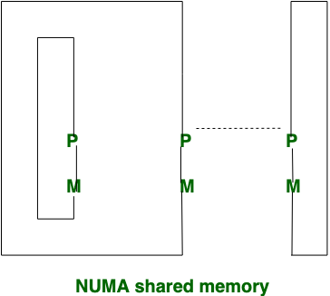
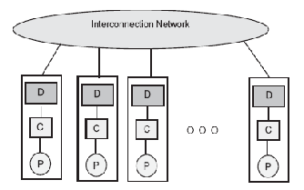
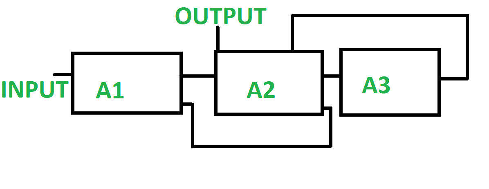

ADVANCED COMPUTER SYSTEM ARCHITECTURE
Question:1 - What is an Instruction Pipeline Design?
Answer :-
Instruction pipelining is a technique used in the design of modern microprocessors, microcontrollers and CPUs to increase their instruction throughput (the number of instructions that can be executed in a unit of time).
Pipelining is an speed up technique where multiple instructions are overlapped in execution on a processor. It is an important topic in Computer Architecture. This slide try to relate the problem with real life scenario for easily understanding the concept and show the major inner mechanism.
The term pipeline refers to the fact that each step is carrying a single microinstruction (like a drop of water), and each step is linked to another step (analogy; similar to water pipes).
Question:2 - What is Advantages and Disadvantages of Pipelining?
Answer :-
Advantages of Pipelining
1. If pipelining is used, the CPU Arithmetic logic unit can be designed faster, but will be more
complex.
2. Pipelining in theory increases performance over an un-pipelined core by a factor of the number of
stages (assuming the clock frequency also increases by the same factor) and the code is ideal for
pipeline execution.
3. Pipelined CPUs generally work at a higher clock frequency than the RAM clock frequency, (as of 2008
technologies, RAMs work at a low frequencies compared to CPUs frequencies) increasing computers overall
performance.
Disadvantages of Pipelining
1. The design of a non-pipelined processor is simpler and cheaper to manufacture, non-pipelined
processor executes only a single instruction at a time. This prevents branch delays (in Pipelining,
every branch is delayed) as well as problems when serial instructions being executed concurrently.
2. In pipelined processor, insertion of flip flops between modules increases the instruction latency
compared to a non-pipelining processor.
3. A non-pipelined processor will have a defined instruction throughput. The performance of a pipelined
processor is much harder to predict and may vary widely for different programs.
Question:3 - Define NUMA.
Answer :-
(Non-Uniform Memory Access) A multiprocessing architecture in which memory is separated into close and distant banks. NUMA is similar to SMP, in which multiple CPUs share a single memory. However, in SMP, all CPUs access a common memory at the same speed. In NUMA, memory on the same processor board as the CPU (local memory) is accessed faster than memory on other processor boards (shared memory), hence the "non-uniform" nomenclature. As a result, NUMA architecture scales much better to higher numbers of CPUs than SMP. "Cache coherent NUMA" means that caching is supported in the local system.
In non-uniform Memory Access, memory access time is not equal.
In Non-uniform Memory Access, Different memory controller is used.
Question:4 - Define COMA.
Answer :-
COMA stands for Cache-only memory access machines. A COMA machine includes several processing nodes connected by an interconnection network. Each processing node has a high-implementation processor, a cache, and an allocation of the global shared memory.
coma shared memory figure..
Question:5 - Explain non linear pipeline processor.
Answer :-
Non-Linear pipeline is a pipeline which is made of different pipelines that are present at different
stages. The different pipelines are connected to perform multiple functions. It also has feedback and
feed-forward connections. It is made such that it performs various function at different time
intervals.
Non-Linear pipelines are dynamic pipelines because they can be reconstructed to implement variable
functions multiple times.
The non-Linear pipeline enables feed-forward and feedback connections additionally to the streamlined
connection.
The Output of the pipeline is not necessarily produced from the last stage.
Dynamic pipelining is specified by more than one Reservation table.

Non-linear pipeline daigram.
Question:6 - Explain non linear pipeline processor.
Answer :-
A reservation table is a way of representing the task flow pattern of a pipelined sytem. A reservation
table has several rows and columns. Each row of the reservation table represents one resource of the
pipeline and each column represents one time-slice of the pipeline.
For example, if in a pipelined system, there are four resources and five time-slices, then, the
reservation table will have four rows and five columns. All the elements of the table are either 0 or 1.
If one resource (say, resource i) is used in a time-slice (say time-slice j), then the (i,j)-th element
of the table will have the entry 1. On the other hand, if a resource is not used in a particular
time-slice, then that entry of the table will have the value 0.
Question:7 - What is Data Hazards?
Answer :-
Data hazards occur when instructions that exhibit data dependence modify data in different stages of a
pipeline. Ignoring potential data hazards can result in race conditions (also termed race hazards).
There are three situations in which a data hazard can occur:
1. read after write (RAW), a true dependency
2. write after read (WAR), an anti-dependency
3. write after write (WAW), an output dependency
Question:8 - What is Coherence
Answer :-
Coherence defines the behavior of reads and writes to a single address location.
Question:9 - What is Cache Coherence
Answer :-
Cache coherence is the discipline that ensures that changes in the values of shared operands are
propagated throughout the system in a timely fashion.
There are three distinct level of cache coherence :-
1. Every write operation appears to occur instantaneously.
2. All processors see exactly the same sequence of changes of values for each separate operand.
3. Different processors may see an operation and assume different sequences of values; this is known as
non-coherent behavior.
Open this and read all about Cache cohernece.
Open a PDF file CLICK ME.
Question:10 - What is Parallel Programming Model?Explain it.
Answer :-
Open this and read all about Parallel Programming Model .
Open a PDF file CLICK ME.
Question:10 - Read More about pipelining.
Answer :-
Open this and read all about pipelining .
Open a PDF file CLICK ME.
Question:10 - Read More about Non-Linear Processors
Answer :-
Open this and read all about Non-Linear Processors .
Open a PDF file CLICK ME.
Question:10 - Read More about Multithreading
Answer :-
Open this and read all about Multithreading .
Open a PDF file CLICK ME.
Question:10 - Read More about Parallel Languages
Answer :-
Open this and read all about Parallel Languages .
Open a PDF file CLICK ME.
Question:10 - Read More about Code Optimization
Answer :-
Open this and read all about Code Optimization .
Open a PDF file CLICK ME.